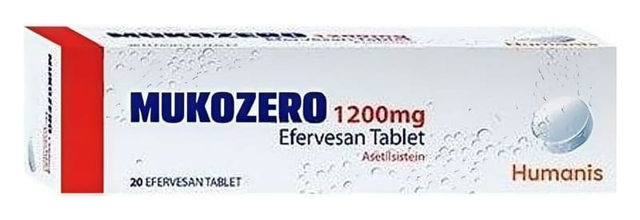

Mukozero 1200 mg Efervesan Tablet, 20 Adet

Ne için kullanılır
KT · Bölüm 1MUKOZERO yuvarlak, sarı-beyaz renkli, her iki yüzü düz efervesan tablettir. 20 efervesan tablet polipropilen tüp ambalaj içerisinde ve karton kutuda kullanma talimatı ile beraber ambalajlanır. MUKOZERO suda tamamen eritildikten sonra içilerek kullanılan bir ilaçtır. MUKOZERO etkin madde olarak asetilsistein içerir. Asetilsistein, bir amino asit olan sistein türevi bir ajandır. Balgam söktürücü etkiye sahiptir. MUKOZERO yoğun kıvamlı balgamın atılması, azaltılması, yoğunluğunun düzenlenmesi, ekspektorasyonun (balgamın atılabilmesi) kolaylaştırılması gereken durumlarda, bronkopulmoner (bronş ve akciğer) hastalıklarda, bronşiyal sekresyon (solunum yolu salgısı) bozukluklarının tedavisinde kullanılan mukolitik (balgamı, mukusu parçalayan) bir ilaçtır. Ayrıca yüksek doz parasetamol alımına bağlı olarak ortaya çıkan karaciğer yetmezliğinin önlenmesinde kullanılır.
MUKOZERO soğuk algınlığı ve solunum yollarının iltihaplanması (bronşit) durumunda balgam oluşmasını azaltır. Oluşan balgamları sulandırarak, öksürükle atılmasını kolaylaştırır.
MUKOZERO içeriğinde bulunan asetilsistein kaz/ördek tüyü kaynaklıdır. MUKOZERO içeriğinde bulunan laktoz(susuz) inek sütü kaynaklıdır.